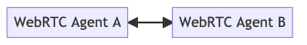
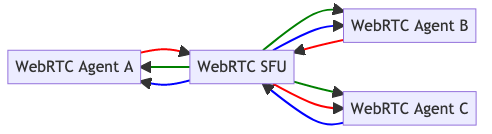

WebRTC 应用场景
现在你已经知道 WebRTC 的工作原理，到了使用它的时候了！本章探讨人们使用 WebRTC 构建什么以及他们是如何实现的。你将学到基于 WebRTC 发生的所有有趣的事情。WebRTC 的功能是有代价的。建立产品级的 WebRTC 服务相当有挑战性。本章将尝试解释这些挑战性的根源，这样你遇到问题时就能有所准备。
用例
许多人认为 WebRTC 只是一种在 web 浏览器中实现电话会议的技术。实际上，它能做的不仅如此！ WebRTC 被广泛用于各种用例。新的用例一直在出现。在本章中，我们将列出一些常见的用例，并探讨一下 WebRTC 是如何对它们进行革新的。
电话会议
电话会议是 WebRTC 的原始用例。该协议包含浏览器中几个必要功能，这些功能没有其他协议提供支持。你可以使用 WebSockets 构建会议系统，在各种条件都满足的情况下，它可能可以工作。但如果你希望在现实世界的网络条件下部署一些服务，那么 WebRTC 是最佳选择。
WebRTC 为媒体提供拥塞控制和自适应比特率。随着网络条件的变化，用户仍将获得最佳体验。开发人员不必编写任何其他代码来处理这些情况。
参与者可以发送和接收多个流。在呼叫过程中，他们还可以随时添加和删除这些流。编解码器也经过协商。所有这些功能都是由浏览器提供的，开发人员无需编写任何自定义代码。
数据通道也对电话会议有所助益。用户可以发送元数据或共享文档。如果更看重性能而不是可靠性，可以创建多个流并对其进行配置。
广播
许多使用 WebRTC 的新项目开始出现在广播领域中。协议为媒体的发布者和消费者都提供了很多支持。
浏览器中的 WebRTC 使得用户可以轻松发布视频。这样用户不需要下载新的客户端。 任何具有 Web 浏览器的平台都可以发布视频。发布者可以发送多个音轨 / 视频流，并可以随时对其进行修改或删除。传统协议中每个连接只允许一个音频或一个视频流，与之相比，这是一个巨大的改进。
WebRTC 使开发人员可以更好地控制延迟和质量之间的权衡。如果不允许延迟超过特定阈值更重要，那么为此你可能愿意容忍对解码质量做一些让步。你也可以将播放器配置为在媒体到达时立即播放。如果是使用在 TCP 之上的其他协议，要完成这一点并不是那么容易。但在浏览器中，你只需要请求数据，就这么简单。
远程访问
远程访问是当你通过 WebRTC 访问远端的另一台计算机。你可以完全控制远程主机，也可以只控制一个应用程序。当本地硬件无法执行繁重的计算任务时，这非常有用。例如，运行新的视频游戏或 CAD 软件。WebRTC 能够通过下面三种方式彻底改变对物理空间的需求。
WebRTC 可用于远程访问那些无法直接路由的主机。使用 NAT 遍历，你可以访问仅通过 STUN 可用的计算机。这对于安全性和隐私性非常有用。你的用户不必通过中转或所谓 " 跳转盒 " 来路由视频。NAT 遍历还使得部署更加容易。你不必担心端口转发问题或提前设置静态 IP。
在这种场景下，数据通道也非常强大。可以对它们进行配置，以便仅接受最新数据。使用 TCP 运行时，可能会遇到队头阻塞的风险。旧式的鼠标点击或按键可能会迟到，并阻止后续的鼠标被接受。 WebRTC 的数据通道的设计可以处理此问题，并且可以配置为不重试丢失的数据包。你还可以测量背压，并确保你不会发送更多的数据以至于网络无法支持。
浏览器中提供的 WebRTC 极大地改善了生活质量。你无需下载专有客户端即可开始会话。捆绑了 WebRTC 的客户端越来越多，智能电视现在也开始拥有了完整的 Web 浏览器。
文件共享和审查制度
文件共享和审查规避是截然不同的问题。然而，WebRTC 同时解决了他们两者的相同问题。它使得文件既容易获得又更难以阻止。
WebRTC 解决的第一个问题是客户端的获取。如果要加入文件共享网络，需要下载客户端。即使网络是分布式的，你仍然需要首先获得客户端。在受限制的网络中，下载通常会被阻止。即使你可以下载它，用户也可能无法安装和运行客户端。而 WebRTC 在每个 Web 浏览器中都可用，这点使得它无处不在。
WebRTC 解决的第二个问题是流量被阻止的情况。如果你使用的协议仅用于文件共享或审查制度，那么阻止它会容易得多。由于 WebRTC 是通用协议，阻止它将影响所有人。阻止 WebRTC 可能会影响网络中的其他用户加入电话会议。
物联网（IoT）
物联网（IoT）部分涵盖了几种不同的用例。许多人都见过网络连接的安防摄像头。使用 WebRTC，你可以将视频流式地传输到另一个 WebRTC 对等设备，例如电话或浏览器。另一个用例是让设备连接并交换传感器数据。你的局域网中可以有两个设备，互相交换天气，噪音或明亮度的读数。
与传统的视频流协议相比，WebRTC 具有巨大的隐私优势。由于 WebRTC 支持 P2P 连接，因此摄像头可以将视频直接发送到你的浏览器。没有必要将你的视频发送到第三方服务器。即使视频是经过加密的，攻击者也可以根据通话的元数据做出一些猜测。
互操作性是物联网领域的另一个优势。WebRTC 支持多种不同的语言，包括 C＃，C ++，C，Go，Java，Python，Rust 和 TypeScript。这意味着你可以使用最适合你的语言。而且你无需求助于专有协议或格式就可以连接你的客户端。
媒体协议桥接
如果你现有的硬件和软件已经在产生视频，但是你还不能对其进行升级。期望用户下载专有客户端来观看视频是一件令人沮丧的事。解决问题的答案是运行一个 WebRTC 桥接器。桥接器在两种协议之间进行转换，因此用户可以在浏览器中使用旧的设置。
开发人员桥接使用的许多格式都使用与 WebRTC 一致的协议。SIP 通常通过 WebRTC 暴露接口，并允许用户从其浏览器拨打电话。RTSP 用于许多旧式安保摄像头。它们都使用相同的基础协议（RTP 和 SDP），因此其计算成本很低。只需要添加或删除 WebRTC 特定的内容即可完成桥接工作。
数据协议桥接
Web 浏览器只能通过一组受限制的协议通信。你可以使用 HTTP，WebSockets，WebRTC 和 QUIC。如果要连接到其他设备，你需要使用协议桥。协议桥是将外部流量转换为浏览器可访问内容的服务器。一个流行的示例是从浏览器使用 SSH 访问服务器。使用 WebRTC 的数据通道构建协议桥的话，具有下面两个优势。
WebRTC 的数据通道允许不可靠且无序的交付。这在低延迟至关重要的情况下是必需的。你不会希望新数据被旧数据阻挡，这就是所谓的队头阻塞。假设你正在玩多人参与的第一人称射击游戏。你真的在乎玩家在两秒钟前的位置吗？如果这些数据没有及时到达，那么继续尝试发送就没有意义了。不可靠和无序的传送使你在一收到数据时就可以立即得到它。
数据通道还提供压力反馈。这可以告诉你发送数据的速度是否超过了连接所能支持的速度。然后，当这种情况发生时，有两个选择。可以将数据通道配置为缓冲并延迟传送数据，也可以删除尚未实时到达的数据。
远程操作
远程操作是指通过 WebRTC 数据通道控制远端设备，并通过 RTP 将视频数据发送回来。现在的开发人员已经可以通过 WebRTC 远程驾驶汽车了！这种技术可以用来控制施工现场和运送包裹的机器人。使用 WebRTC 解决这些问题很有意义，原因有两个。
WebRTC 的普及使用户可以轻松控制。用户所需的只是一个 Web 浏览器和一个输入设备。浏览器甚至支持从操纵杆和游戏手柄获取输入。WebRTC 完全不需要在用户设备上安装其他客户端。
分布式 CDN
分布式 CDN 是文件共享的子集。分发的文件由 CDN 操作员配置。当用户加入 CDN 网络时，他们可以下载和共享允许的文件。用户获得与文件共享相同的所有好处。
当你在外部连接很差但 LAN 连接很好的办公室中时，这些 CDN 效果很好。你可以让一个用户下载视频，然后与其他人共享。由于不需要每个人都尝试通过外部网络获取相同的文件，因此传输将更快地完成。
WebRTC 拓扑
WebRTC 是用于连接两个 Agent 的协议，那么开发人员如何能同时连接上百人呢？你可以通过下面几种不同的方式来做到这一点，它们各有利弊。这些解决方案大致分为两类；点对点或客户端 / 服务器。WebRTC 的灵活性使我们能够同时创建两者。
一对一
一对一是你使用 WebRTC 的第一种连接方式。将两个 WebRTC Agent 直接连接，它们可以双向发送媒体和数据。 连接看起来像这样。

全网格
如果要建立电话会议或多人游戏，那么要使用全网格。在这种拓扑中，每一个用户都直接与其他各个用户建立连接。你可以这样构建应用，但是它有一些缺点。
在全网格拓扑中，每个用户都直接连接（到其他用户）。这意味着你必须为参与通话的每个成员独立编码和上传视频。 由于各个连接的网络条件会有所不同，因此你无法重用同一视频。在这些部署中，错误处理也很困难。你需要仔细考虑连接是不是已经彻底断开了，还是只是丢掉了与单个远端 peer 的连接。
由于这些问题，全网格最好用于小型群组。对于更大的群组，最好还是使用客户端 / 服务器拓扑。

混合网格
混合网格是全网格的替代方案，可以减轻全网格的某些问题。在混合网格中，并不是所有每个用户之间都建立连接。作为替代，媒体是通过网络中的 peer 转发的。这意味着分发媒体时，创建者可以不必使用那么多的带宽。
这种方案确实也有一些缺点。在这种配置下，就算是媒体最初的创建者也不知道视频是谁发送的，也不知道视频是否成功的到达了目标。在混合网格网络中，每增加一跳，延迟也会相应地增加。

选择性转发单元（Selective Forwarding Unit）
SFU（选择性转发单元）同样解决了全网格网络的问题，但它使用了一种完全不同的方案。SFU 以客户端 / 服务器拓扑实现，而不是 P2P 网络。 每个 WebRTC peer 都连接到 SFU 并上传其媒体。然后，SFU 将此媒体转发到其他每个连接的客户端。
使用 SFU，每个 WebRTC Agent 只需要执行一次视频的编码和上传。SFU 负责将视频分发给所有观看者。 与 SFU 的连接也比 P2P 方式容易得多。你可以让 SFU 运行于一个全世界都可以访问的地址上，从而使得客户端连接更加容易。 你无需担心 NAT 映射。但你仍然需要确保 SFU 是可以通过 TCP（ICE-TCP 或 TURN）使用的。
要创建一个简单的 SFU，一个周末就可以完成。但建立一个可以处理所有类型客户的高质量 SFU，是永无止境的。因为，拥塞控制调优、纠错和提高性能，是一项永无止境的任务。

多点会议单元（Multi-point Conferencing Unit）
MCU（多点会议单元）与 SFU 的客户端 / 服务器拓扑类似，但它会对输出流进行组合。MCU 将要出站的媒体重新编码为一个聚合流，而不是直接分发未经修改的版本。